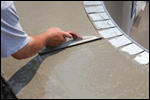

ROMANS 8:28 And we know that all things work together, for good to them, that love God to them, that are called according to his purpose.
Phone: (502) 491-8550
NEW LEVEL CONSTRUCTION LLC.
SERVING THE GREATER LOUISVILLE. KY AREA

- 


, framing, siding, gutters and brick. We can handle any minor or major
jobs that need attention. Depending on the size of the job can be
completed from start to finish in one day. We have been in business
for over 20 years, serving the Louisville, Ky area. We specialize in
working as a team, with all clients. Our main focus and concentration
is speed, quality and cosmetic appearance. We provide a smooth
and professional relationship as well, as an easy transition from start
to finish on every job. When a job is scheduled. we always show up
on time. We’re also available to be reached directly on my cell phone
at 502-445-5175 / 24 hours a day / 7 days a week for a time
of, any crisis situations.Our requirements for each division of New
Level Construction have a very tight systematic procedure upon start
through the completion of each job. Our installations will withstand
the test of time, this is a reason that our organization craftsmanship
is unmatched. We are associated with professional builders
, commercial contractors, developers and property maintenance
outfits in the Louisville, KY area. A reference lists is provided and will
follow. We encourage you to contact them directly on the cell number
listed for each individual and give us an opportunity to join your
team, as we expect long term business relationships with our
potential and existing clients.